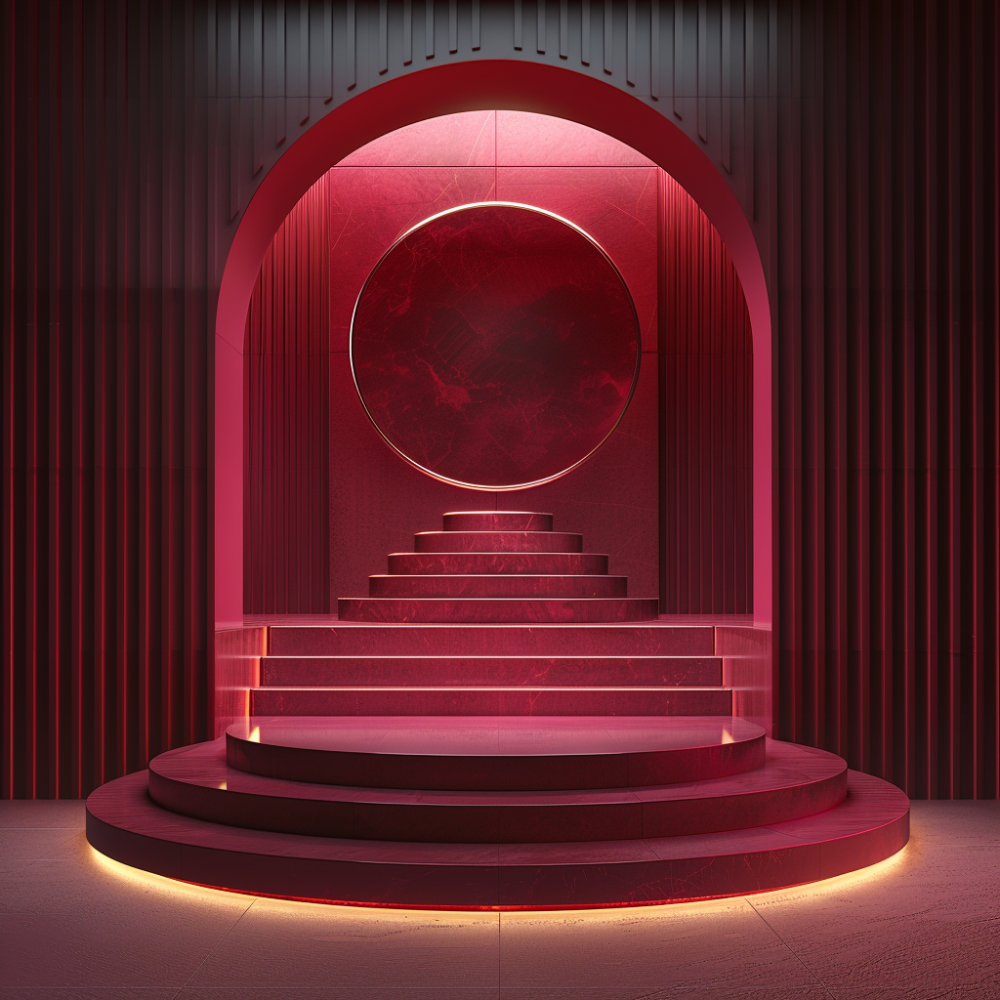

THE ART OF
DIGITAL PERMANENCE.
Redefining the boundaries of preservation through high-velocity data structures and editorial curation. Kinetic Archive is the world's most sophisticated living record.
The Velocity of Crimson
TECHNOLOGY
Our infrastructure is built for the next century. Using decentralized nodes and cryptographic verification to ensure that every byte of history remains untampered.
Contextual Retrieval Engine
Move beyond keywords. Our engine understands the emotional and historical weight of data, surfacing content that resonates with the present moment.
Hardened Immutable Ledgers
Every interaction within the Kinetic Archive is cryptographically signed and stored across 4,000 global nodes.
PRESERVING THE
HUMAN ELEMENT.
Global Contributors
Artists and scientists from 120 nations documenting the evolution of our species.
Unstructured Data
Converting raw existence into structured knowledge for future civilizations.

"Kinetic isn't just storing files; it's capturing the vibration of our era for those who follow."
— Dr. Elena Vance, Editorial Lead